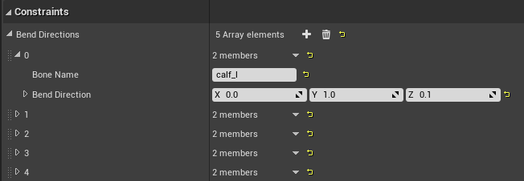
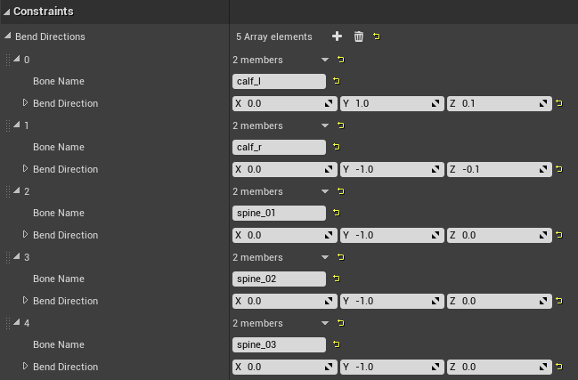
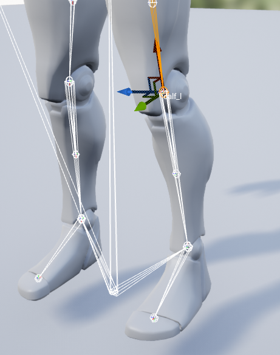

Bend Directions
By default, Power IK will bend limbs in the direction that they are bent in the input pose.
Sometimes the input pose does not give a good enough hint of which direction to bend in. So you must explicitly tell the solver which direction a given bone is meant to bend in.
If you witness knees and elbows bending off-axis, chances are you need to specify a custom Bend Direction.

Specify a Custom Bend Direction
- Determine the name of the bone that is bending in the wrong direction. You can find this in the Skeleton editor in Unreal.
- Determine what local axis (in bone space) that points in the direction the limb should bend. For example, if the Y axis points in the direction of the knee, the bend vector is 0, 1, 0. Make note of this vector.
- Select the Power IK Solver node and in the detail panel locate the Constraints section.
- Click the + icon next to Bend Directions to add a new Bend Direction to the array.
- Add the Bone Name and Bend Direction vector.
- Save and compile the animation blueprint.
The specified bone will now bend in the direction of the vector.
The following image shows the custom bend directions appropriate for the Unreal Mannequin. Notice that the Right side bones have their vectors negated.

How to Determine the Bend Vector
You can verify these vectors by selecting the bone in the skeleton editor and observing the axis that points in the direction the bone should bend. In the image below you can see the Mannequin's left knee should point in the positive Y direction, so the bend vector is (0, 1, 0).
